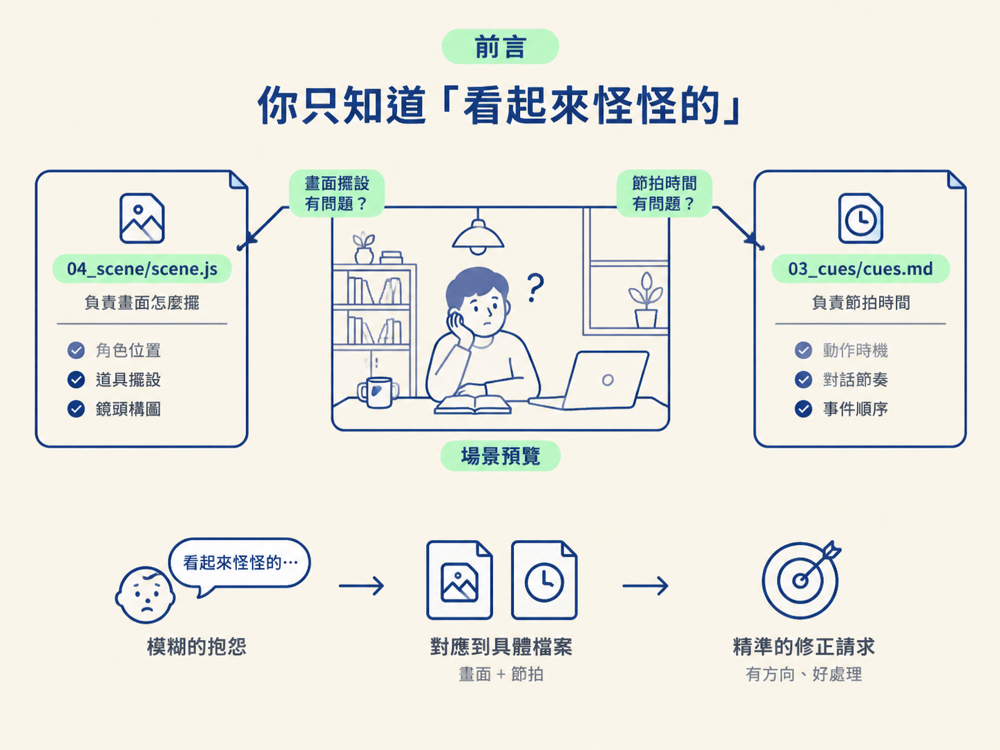
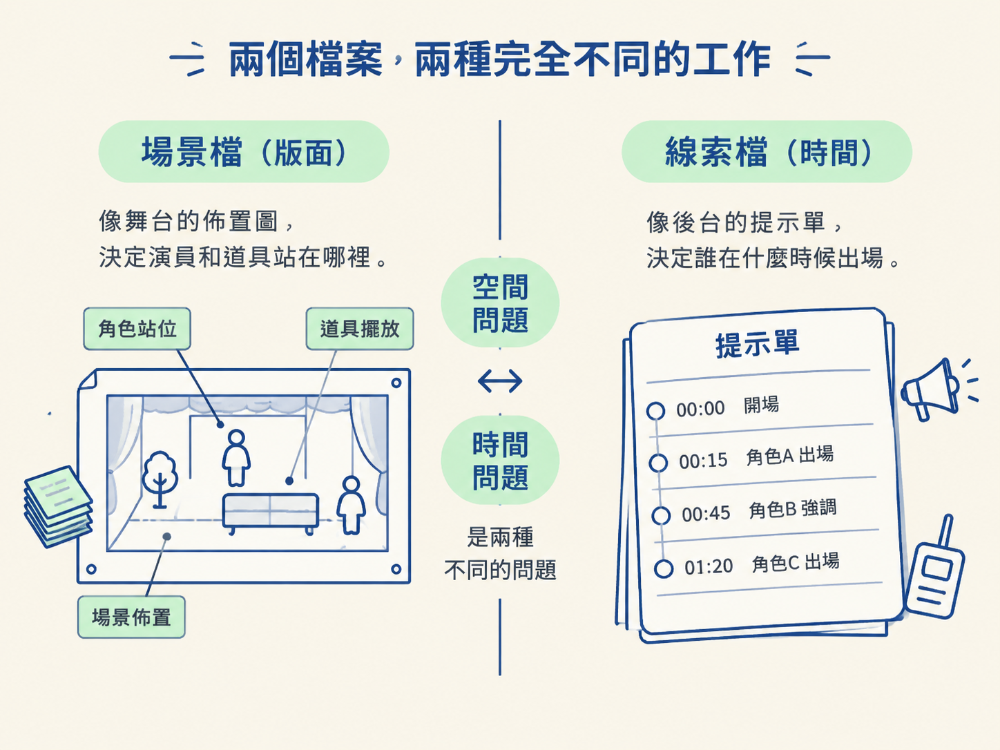

場景預覽打開了，Sam 正在畫面裡活動，整體也確實跑了起來。可是看到某一段時，你發現：「Friday」好像被角色擋住了一角，而且它亮起來的時機似乎比旁白早了半拍。
如果這時候你只對 AI 說：「這裡看起來怪怪的，幫我修一下。」AI 就只能猜。它可能去移動角色，也可能去調整時間，甚至來回改了好幾次，卻始終沒碰到真正的問題。
問題不在你的觀察力，而在於你還沒把「哪裡怪」對應到「哪個檔案」。場景其實由幾個各司其職的檔案組成：有的負責畫面怎麼擺，有的負責節拍什麼時候發生。分清楚這個分工，你就能把模糊的抱怨，翻成精準的修正請求。

這一步的任務，不是要你讀懂所有 JavaScript，而是建立一張簡單的場景地圖：知道問題該交給哪個檔案處理。
你會檢查兩個輸入檔案：
04_scene/scene.js：控制畫面怎麼畫、物件放在哪裡。03_cues/cues.md：控制每個節拍何時開始、何時亮起。AI 負責依照你的要求修改檔案；你則負責重新打開場景預覽，確認畫面上的文字、角色與時間是否真的符合預期。這樣分工，就像請木工移動舞台上的道具，但由導演坐在觀眾席確認最後看起來對不對。
在準備好的工作區裡，場景主要由一個場景檔和一個線索檔決定。它們的控制範圍如下：
| 檔案 | 它控制什麼 | 什麼時候該找它 |
|---|---|---|
04_scene/scene.js | 畫面的繪製與版面配置 | 文字被擋住、物件重疊，或東西放錯位置 |
03_cues/cues.md | 節拍的安排與時間 | 強調出現得太早，或和旁白的時間對不上 |
場景檔管的是「東西長什麼樣、放在哪裡」。便利貼的位置、卡片的三個欄位怎麼排、Sam 站在哪個角落，都屬於這個檔案的工作。
線索檔管的則是「什麼時候發生」。每個節拍會在第幾秒開始，以及強調效果要跟著旁白念到哪個字出現，都寫在這裡。
你可以把場景檔想成舞台的佈置圖，把線索檔想成後台的提示單：前者決定演員和道具站在哪裡，後者決定誰在什麼時候出場。這兩件事必須分開，因為畫面問題和時間問題是兩種不同的問題，混在一起修改，只會讓排查變得更混亂。

知道分工後，最實用的判斷方式就是先看症狀，再回推檔案。你不必先讀懂程式，只要先問自己：這是空間問題，還是時間問題？
假設預覽中「Friday」被角色擋住了一部分。文字已經出現在正確的內容裡，問題是它被其他物件蓋住了。這屬於空間問題，因此應該請 AI 修改 04_scene/scene.js，例如移開角色，讓 due day 保持完整可讀。
另一種情況是 due day 的位置沒有問題，但它比旁白早出現。這時候要調整的不是畫面版面，而是節拍時間。你應該請 AI 檢查 03_cues/cues.md，讓強調效果配合旁白真正念到這個字的時刻。
同樣都是「有一個地方不對」，症狀不同，該修改的檔案也不同。如果把時間問題當成位置問題，AI 可能會一直挪動版面，卻無法解決內容提早出現的問題；反過來，把文字遮住誤判成時間問題，也一樣不會有效。
精準請求的重點，不是使用艱深術語，而是不要只描述感覺。你可以說清楚三件事：問題發生在什麼時刻、觀眾應該看到什麼，以及你判斷它屬於版面問題還是時間問題。
例如，你可以先請 AI 顯示場景檔裡與 Friday 相關的那一段，再指出：「在旁白念到 Friday 的畫面中，文字被 Sam 擋住，請調整場景檔的版面，讓 due day 完整可讀。」
如果問題是時間，就可以改成：「旁白念到 Friday 之前，due day 就已經亮起來了。請檢查線索檔的節拍，讓強調效果在旁白念到這個字時才出現。」
這樣的請求同時交代了具體時刻、觀眾應該看到的結果，以及可能出問題的檔案。AI 不需要猜你的意思；修改完成後，你再請它打開更新後的場景預覽，直接檢查畫面與時間是否改善。
你不需要記住 JavaScript 的每一行，也不需要先成為工程師。這一步真正要掌握的是檔案的責任範圍：誰負責畫面、誰負責時間。只要這張地圖清楚，你就能把需求講明白。
「場景檔管版面、線索檔管時間」其實是前面那個分工原則的具體做法：AI 負責動手，你負責判斷與檢查。
但要讓你的判斷真正有用，你得先知道修改範圍切在哪裡。這個心智模型就是你的翻譯層：把眼睛看到的問題，翻成 AI 能執行的修正請求。它不是要你背程式，而是讓你在「AI 動手、你檢查」的流程裡，能精準指出該改哪裡。
場景檔（04_scene/scene.js）管畫面怎麼畫、東西擺在哪裡；線索檔（03_cues/cues.md）管節拍什麼時候開始。看到文字被擋住，去改版面；看到強調跟旁白對不上，去查時間。請求裡帶上具體時刻和觀眾該看到的結果，就不需要背任何一行程式。
知道該改哪個檔案之後，下一個問題是：這張畫面本身選得對不對？有些內容用手繪示意圖最清楚，有些時候卻非用真實的螢幕截圖不可。下一步，我們就來看該怎麼判斷這個選擇。